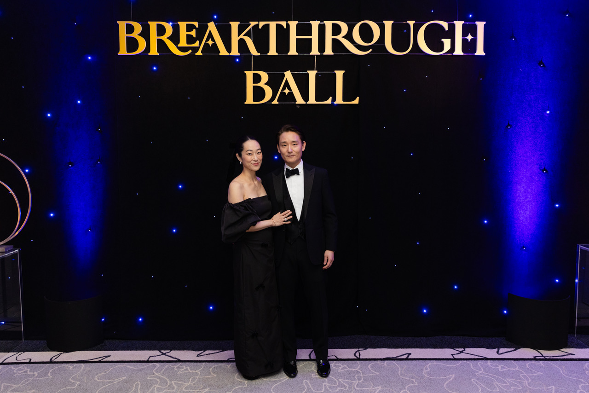

“The Odyssey was not just a voyage, it was a trial revealing courage, resilience and hope as well as a celebration of all the heroes,” Pauline Chow, co-chair of the 2026 Breakthrough Ball.
Well before Christopher Nolan’s extraordinary movie came out, the chairs of the 2026 Breakthrough Ball - hosted by The Breakthrough Board November 14th at the Four Seasons Chicago - had chosen Homer’s greatest lyric poem of all time to be the theme of the evening. The gala celebrates epic discoveries in research and medical advancements at UChicago Medicine while recognizing the courage and resilience of patients, their families and their medical teams.
Congratulations were in order for already raising $1.1 million before the doors open when we spoke with Pauline Chow and Jane Chun, co-chairs, and Jennifer Rhind, The Breakthrough Board’s President. Once again an extraordinary team has proved that the Board’s commitment to the mission of navigating advancements through herculean funding has made them heroes all.
“When the board was founded 70 years ago, Grace Kelly was still acting and Ike was President. It is a tribute to our members that we have been able to adapt while keeping our key principles and honoring our legacy while trying new technology and building our fundraising goals,” Rhind, an extraordinary mentor and motivator, told us. “We have made a real commitment to bringing on newer and younger professionals to lead the board into the future. It is an absolute joy to watch our co-chairs’ natural collaboration and witness their individual talents shine.”

Jane Chun, a senior digital editor at Vogue magazine, covering politics, culture, and fashion, took on the assignment of the user experience: how guests might be swept into an odyssey of the evening.
“I looked at Homer’s texts to see how we might work in the zeitgeist of being swept up by stormy and fierce seas and then transported to a bucolic location. Without giving away the evening’s ‘ta da’ moments, we looked at that point as the hero tries to journey home and he and his men are caught between Scylla and Charybdis. We asked our designers to work with the idea of the angry ocean and then the bucolic setting in the ballroom as an Ithaca.”
Enroute to Vogue, Chun spent six years at Forbes magazine as a digital editor and video network reporter after receiving her master’s degree in journalism from Columbia University. Chun joined The Breakthrough Board in 2023, inspired by her mother-in-law’s service on the board and by an elementary-age cousin’s battle with leukemia. She resides in the Gold Coast with her husband and two daughters.
Pauline Chow told us:
“We had wanted to work with the concept of water and Jane had the idea of using The Odyssey. She took it from there. We have a real partnership, two mindsets coming together. Jane has the most amazing creative vision and I am a targeted fundraiser who enjoys working with a budget. I was delighted when the prominent vintner DuMOL donated our dinner wine and we have saved a significant amount there.”
“My decision to join The Breakthrough Board is deeply personal. I lost my grandmother to cancer, and as a cancer survivor myself, I know firsthand how profoundly this disease changes lives—not only for patients, but for the families and loved ones who share their journey. These experiences have given me a deep appreciation for the importance of medical discovery and the hope that research brings. Throughout my career as an investor in businesses and advisor to entrepreneurs, I have focused on recognizing untapped potential, investing in promising opportunities, and helping businesses navigate uncertainty to achieve meaningful, lasting outcomes. I believe the same principles apply to advancing cancer research: identifying extraordinary ideas, providing critical resources, and having the conviction to support innovation. As a member of The Breakthrough Board, I have the privilege of bringing these two perspectives together—supporting the exceptional researchers and physicians at UChicago Medicine whose discoveries may give patients and their families more time, more possibilities, and above all, more hope.”
“The most rewarding part of co-chairing The Breakthrough Ball is the excitement of inspiring generosity. There is a special joy in the moment when someone makes a meaningful commitment to support cancer research—when a shared conversation becomes a shared purpose. Throughout my career, I have found great satisfaction in recognizing opportunities and helping ambitious ideas become reality. Co-chairing the gala allows me to channel that same passion into something profoundly meaningful. Every donation feels like a small victory, not simply because we are closer to our fundraising goal, but because it represents another opportunity for researchers to pursue discoveries that could change lives. Creating a beautiful evening is certainly part of the fun, but the greatest celebration is knowing that our collective generosity can bring hope to patients and families facing cancer.”
Jennifer Rhind told us:
“For 17 years we have benefitted from the creativity of Ogilvy and we are fortunate that a group of talents from the company continue to work on our film and other creative elements of the event on a pro bono basis. They have said that they are so inspired by our mission. We love and appreciate how well they can articulate the theme for the year: the compelling story of the ordeals researchers and cancer center administrators go through in bringing an idea to a clinical trial.”
“We are also fortunate to have Alyssa D. Quinlan, Global Head of Fine Art Advisory & Strategic Partnerships at Northern Trust, returning as our gracious and wonderful auctioneer again.”
“Highlights of the Silent and Live Auction include a stunning Barbara Parker Fine Jewelry custom handmade 18kt pendant, made in Italy in 18kt yellow, white or rose gold (the winner can choose!), set with diamonds, and personalized with custom monogram; a two-night stay at the famed and spectacular Four Seasons Resort Mallorca at Formentor in Spain; A luxurious stay at Montage Healdsburg, California which includes a golf and spa experience for four at Mayacama Golf Club: and an exclusive lunch and winery tour at DuMOL Winery. We will once again feature a wine raffle with 40 plus bottles of fine wines. Alessandra Smith (daughter of board member Anna Smith), and her marketing savvy team will be spearheading raffle ticket sales throughout the evening.”
Raising major funds for something you truly believe in is hard work, time intensive but of lifelong value.
“Co-chairing the gala has been like squeezing into an elevator with 100 impressive, erudite women. During the ride, you get to know their histories, their favorite places, the books their grandchildren are reading, and most importantly, why they’re on the elevator. It has been such a privilege and enormous fun.”
“Pauline and I Zoom every Wednesday at noon, I call it my Pauline time,” Chun said. “When I have my phone out, my little daughter asks if I am texting Pauline. My husband calls her my gala wife.”
Rhind shared others who are leading the November 14th event.
“The ball-chairs assembled a fantastic benefit committee including: Kathryne Cole (Silent Auction Chair), Beth Eugenio (Golf / Silent Auction), Madeline Cascio (Silent Auction), Elizabeth Luttig, Leslie McLean, and Laura Werner, (Host Committee), Joan Siff, Anna Draft, Hanna Helms, Claire Cusack, Caroline Quazzo Elnick (Corporate Committee), Karen Slimmon and Katie McLean (Reservation Team), Kristi Nuelle (Invitation/ Film),Nicole Drusinsky (Entertainment), Mary Conrad (Save the Date), Mary Skoning (Program Book), Bliss Packer and Danna Horton (Program Book), Kelly Harrold, Cait Langer and Jean Atchison (Decor), Miranda Maxfield (Wine Raffle Chair), Elisabeth Adams, Terry Brumfield, and Lena Helms on the most coveted benefit assignment: the poster team. And, as previously mentioned, Anna Smith, her daughter, Alessandra, and the 2026 raffle ticket sellers: Hope Stineman, Frances Barlow,
Eleonora Fazio, Maggie Stark, Molly King, Mia Zinser, and Mia Lezotte.
For further information about The Breakthrough Board visit: cancerresearchfdn.org